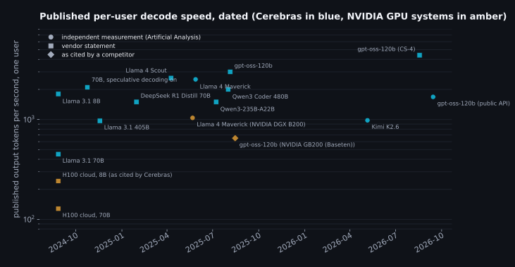
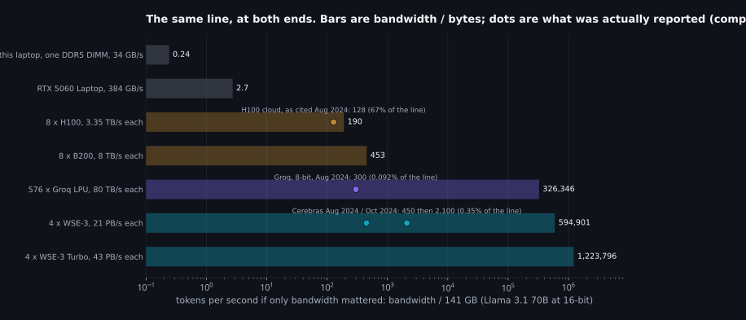
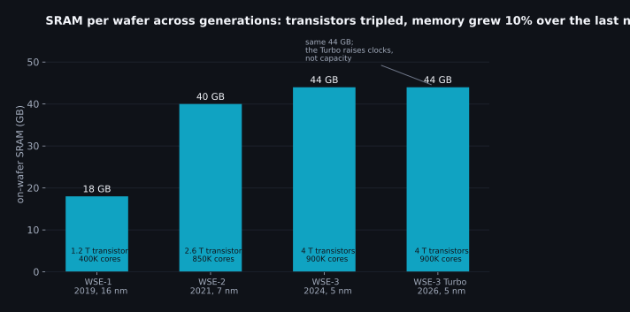
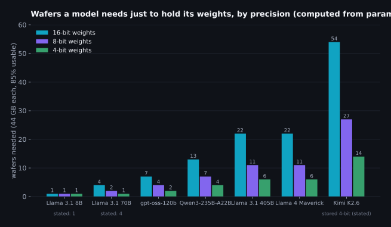
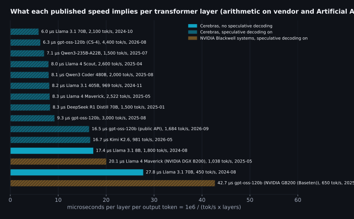
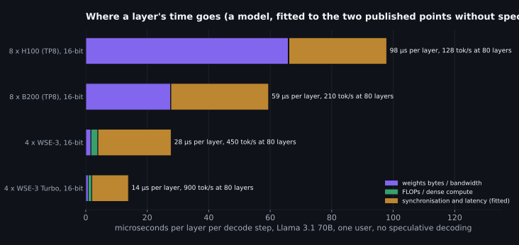
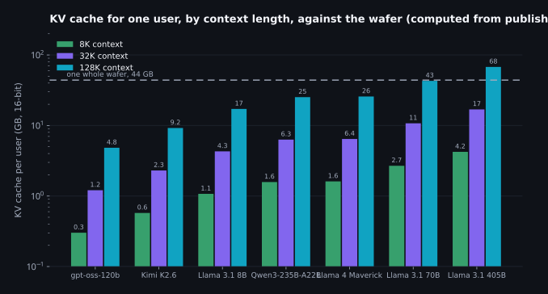
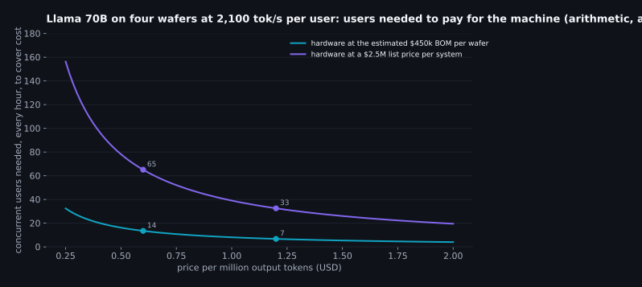

Where the bandwidth line ends: how Cerebras gets to 2,000 tokens a second, worked out from the outside
Why I went looking
Two posts ago I measured one laptop and found that every decode number it produced sat under a single line: memory bandwidth divided by the bytes a token reads. The follow-up showed the line holds for six architectures once you count the bytes correctly. The laptop's line is 34 GB/s. A good server GPU is a hundred times that. And then there's a company that sells a 70B model at two thousand tokens a second, per user, which on that same arithmetic would need a line somewhere north of a hundred terabytes a second. I wanted to know what the far end of the line looks like, whether the arithmetic I've been using on a laptop says anything useful about it, and where it stops saying anything at all.
So this is a post about Cerebras, written from the outside. I have never touched one of their systems. What I have is what everyone has: their own technical posts and press releases, two Hot Chips talks, the S-1 and the quarterly filings, a handful of independent measurements from Artificial Analysis and two universities, two research papers that ran real language models on real wafers and published what they found, a long analyst piece, and the forum threads where people who build chips argue with people who buy tokens. I read all of it, and then I did what the first two posts did: arithmetic. Every number in what follows is dated and marked by where it came from, because in this subject a number without a date is close to worthless. The 70B figure moved from 450 to 2,100 tokens a second in two months.
| Kind of number | Examples | How I treat it |
|---|---|---|
| Vendor | Cerebras spec sheets, blog posts, press releases; NVIDIA's own record post | True as stated, but check what's stated: which model, which precision, how many users, whether a draft model was involved, which day. |
| Independent | Artificial Analysis measurements, two peer-reviewed papers that ran on real hardware, SEC filings | The numbers I'd build on. Where they disagree with a vendor number, the disagreement is the interesting part. |
| Community | Hacker News commenters with chip backgrounds, an analyst's cost model, a Cerebras employee's forum reply | Estimates. Quoted as estimates, with the handle, never promoted to fact. |
| Computed | Everything with "arithmetic" in the chart title | Mine. The formulas are in the repository next to the source list, so you can change an input and see what moves. |
I should say what this is not. It's not sponsored, I hold no position in the stock, and I have no inside knowledge; where I say "Cerebras must be doing X" I mean the published numbers only add up if X, and I say so. It's also not a buyer's guide. It's the third time I've asked the same question, "why is this number what it is", of a machine I find interesting, and the first time the machine is one I can't put a probe on.
| Section | The question it answers |
|---|---|
| What is claimed, and when | Which numbers exist, who measured them, and what each one quietly assumes. |
| What the line says must be true | If a 400B model really decodes at a thousand tokens a second for one user, what has to be physically true, and the three ways to make it true. |
| What a wafer is | The chip, core by core, with the spec sheet re-derived from first principles so the big numbers stop being magic. |
| Putting a transformer on a mesh | Why the obvious software is hundreds of times too slow on this hardware, from the one group that published a working system. |
| Bigger than a wafer | How many wafers each model needs, what moves between them, and what that rules out. |
| Where the millisecond goes | The centre of the post: the bandwidth line predicts six hundred thousand tokens a second and they get two thousand. What eats the rest, and why it's the same thing on every published number. |
| What the design gives up | Context, prompts, batch, power, memory that stopped growing, and the money. |
| The other exits | Groq and NVIDIA solve the same equation with different terms. |
| What carries back | Which of this applies to the laptop on your desk, and which doesn't. |
What is claimed, and when
The chart below is every per-user decode speed I could find with a date on it, from the launch of Cerebras Inference in August 2024 to the week I'm writing this. Squares are the vendor's own statements, circles were measured by Artificial Analysis, diamonds are a competitor's number as quoted by Cerebras. The two amber squares at the bottom left are the H100 cloud figures Cerebras used as its baseline on launch day, which I include because they are the denominator of every "20x faster" in the press releases.

| Date | Model | tok/s per user | Who | Kind | What it quietly assumes |
|---|---|---|---|---|---|
| 2024-08 | Llama 3.1 8B | 1,800 | Cerebras | vendor | 16-bit weights, one wafer, no draft model yet. |
| 2024-08 | Llama 3.1 70B | 450 | Cerebras | vendor | 16-bit, four systems, no draft model. The cleanest number in the table. |
| 2024-10 | Llama 3.1 70B | 2,100 | Cerebras | vendor | Speculative decoding switched on; the post says plus or minus 20%. |
| 2024-11 | Llama 3.1 405B | 969 | Cerebras | vendor | 16-bit, 1K prompt; 539 at 100K context. System count never stated. |
| 2025-01 | DeepSeek R1 Distill 70B | 1,500 | Cerebras | vendor | Same architecture as the 70B above; reasoning workload. |
| 2025-04 | Llama 4 Scout | 2,600 | Cerebras | vendor | 109B MoE, 17B active. |
| 2025-05 | Llama 4 Maverick | 2,522 | Cerebras | independent | 400B MoE, 17B active; measured by Artificial Analysis. |
| 2025-05 | Llama 4 Maverick | 1,038 | NVIDIA DGX B200 | independent | Eight GPUs, FP8, EAGLE-3 draft model; measured by Artificial Analysis. |
| 2025-07 | Qwen3-235B-A22B | 1,500 | Cerebras | vendor | MoE, 22B active. |
| 2025-08 | Qwen3 Coder 480B | 2,000 | Cerebras | vendor | MoE, 35B active; users reported multi-second time to first token. |
| 2025-08 | gpt-oss-120b | 3,000 | Cerebras | vendor | MoE, 5.1B active; experts are natively 4-bit. |
| 2025-08 | gpt-oss-120b | 650 | NVIDIA GB200 (Baseten) | as cited by a competitor | Eight GB200, TensorRT-LLM, EAGLE-3; the number Cerebras chose to compare against. |
| 2026-02 | GPT-5.3-Codex-Spark | 1,000 | Cerebras (OpenAI) | vendor | Size, layers and precision undisclosed; first OpenAI model served off NVIDIA. |
| 2026-05 | Kimi K2.6 | 981 | Cerebras | independent | 1T MoE, 32B active; weights stored 4-bit, computed 16-bit; private endpoint. |
| 2026-08 | gpt-oss-120b | 4,400 | Cerebras CS-4 | vendor | New three-wafer rack, doubled clock; a demo, not a public endpoint. |
| 2026-09 | gpt-oss-120b | 1,684 | Cerebras public API | independent | Public endpoint under load, long prompt, 1.70 s to first token. |
Five things about this table before any of it gets used.
First, all of it is per-user speed: how fast one conversation's tokens arrive. It says nothing about how many conversations the machine serves at once, and the machine's economics live entirely in that second number. I'll come back to it, because it's the one Cerebras has been least willing to state.
Second, speculative decoding. From October 2024 onward every Cerebras number involves a small draft model proposing tokens that the big model checks in one pass, and Cerebras says so; their own post warns that speed will vary 20% either way as a result. NVIDIA's Blackwell record uses the same idea under the name EAGLE-3. Speculative decoding doesn't change what the hardware can do per forward pass; it changes how many tokens each forward pass is allowed to emit. That distinction turns out to be the key to the whole post, so the two Cerebras numbers from before it was switched on (1,800 for the 8B and 450 for the 70B) are the ones I trust most for working out what the wafer itself does.
Third, precision. Cerebras led with "16-bit weights, no quantization" and, for the Llama models, kept to it. For Kimi K2.6, a trillion-parameter model, their own post says weights are stored in 4-bit and computed in 16-bit, which is exactly what my laptop does with a Q4 file and is a perfectly good choice; it just isn't the launch-day claim, and it matters for the wafer count later.
Fourth, the last dot. Artificial Analysis today lists the public gpt-oss-120b endpoint at 1,684 tokens a second with a 1.70 second time to first token. The August 2025 launch number for the same model on the same generation of hardware was 3,000, and the Hot Chips demo on the new rack was 4,400. A public endpoint under load measured with a long prompt is a different experiment from a launch-day run, and I'd expect it to be lower. But if you are pricing a product on the press-release number, that gap is the first thing to know about.
Fifth, the baselines. The 128 and 242 tokens a second for H100 clouds are what Cerebras measured on other people's services in August 2024. Within a year NVIDIA published 1,038 on a 400B model from a single 8-GPU box, using FP8 and a draft model. The "20x" was real on the day and is not the ratio now; the honest current comparison for a large MoE is roughly 2.4x on Maverick and 4.6x on gpt-oss-120b, both with draft models on both sides.
With the claims pinned down, the question is what any of them would require. That's arithmetic, and it's the same arithmetic as the laptop's.
What the line says must be true
Decoding one token means reading every active weight once. A 70B model at 16-bit is 141 GB; a 405B model is 810 GB. So one user at a thousand tokens a second on the 70B needs 141 TB/s of bandwidth into the compute, and on the 405B needs 810 TB/s. Cerebras's launch post used the first of those figures itself. An H100 has 3.35 TB/s. A B200 has 8. Eight of either in a box, perfectly parallel, are still several times short for the 70B and more than ten times short for the 405B. There is no HBM part on any roadmap that closes that on its own.
Which leaves exactly three ways out, and every fast-inference company is some mixture of them.
| Exit | What it changes in the equation | Who leans on it | What it costs |
|---|---|---|---|
| Read fewer bytes per token | The numerator. 8-bit or 4-bit weights, mixture-of-experts so only a slice of the model is active, and speculative decoding so one read of the weights emits several tokens. | Everyone. NVIDIA's Blackwell record is FP8 plus a draft model; Cerebras's every number since October 2024 has a draft model; Kimi on Cerebras is 4-bit. | Accuracy risk from precision (the first post measured it), model choice constrained to MoE, and speed that fluctuates with how often the draft is right. |
| Add more parts | The denominator, by summing bandwidth across chips with tensor parallelism. | NVIDIA at 8 GPUs per box; Groq at hundreds of chips per model. | Every layer now ends with a synchronisation across chips. Past a few parts the sync costs more than the bytes saved; the WaferLLM measurements below put a number on that for GPUs. |
| Change the memory | The denominator, by moving weights from DRAM to SRAM, which is ten to a hundred times faster per byte but ten to a hundred times smaller per dollar. | Groq (230 MB per chip), Cerebras (44 GB per wafer). | Capacity. The whole model, and every user's context cache, has to fit in a memory that is measured in megabytes per chip or tens of gigabytes per wafer, and that stopped growing. |
Cerebras is the third exit taken to its limit, plus a healthy amount of the first. Here is what the line looks like once you put both ends on it. Same formula as the laptop chart in the last post, same model (Llama 70B at 16-bit), bars are bandwidth divided by bytes, dots are what was actually reported.

That chart is the whole post in one picture. The H100 box was reported at 128 tokens a second against a line of 190, which is 67% of the ceiling; my laptop hits about 80% of its own line on a good day. Four wafers have a combined line of 594,901 tokens a second and were reported at 450 on launch day and 2,100 two months later with a draft model: 0.35% of the ceiling. Groq's 576-chip rack is the same story at 0.09%.
So the SRAM exit does something strange. It doesn't move you along the bandwidth line; it takes you off it entirely. The machines with the most bandwidth are the ones furthest below their ceiling, by three orders of magnitude, and are still the fastest things anyone has measured. Whatever limits a wafer, it is not bytes per second. Before working out what it is, I need to know what a wafer actually is, core by core, because the spec sheet numbers are so large they read as marketing until you rebuild them.
What a wafer is
A normal chip is one rectangle cut out of a 300 mm silicon wafer; an H100 die is about 814 mm². Cerebras doesn't cut. The WSE-3 is the largest square you can draw inside the circle, 46,225 mm² on TSMC's 5 nm process, with 4 trillion transistors, 900,000 cores, and 44 GB of SRAM spread among them. The spec sheet then says 21 PB/s of memory bandwidth, 27 PB/s of fabric bandwidth and 125 PFLOPS of compute. Numbers that size stop meaning anything, so here they are rebuilt from the core up, using what Cerebras has published about the core and what the two papers confirmed by running on it.
One core
Each core has 48 KB of SRAM, arranged as 8 banks of 6 KB, each 32 bits wide, so that in one clock it can do two 64-bit reads and one 64-bit write. Beside the memory is a datapath that in the WSE-3 is 8 FP16 multiply-accumulates wide (the WSE-2 was four), and a router with five 32-bit ports: north, south, east, west and the core itself. Messages are 32-bit "wavelets", one 16-bit number plus 16 bits of control, and a wavelet crosses from one core to its neighbour in a single clock. Each router holds 24 static routes, set up before the program runs, so there's no routing table lookup in the data path. The clock, published for the WSE-2 and by all the arithmetic unchanged for the WSE-3, is 1.1 GHz. Half the core's area is memory and half is logic.
Two more things about the core that matter later. Execution is dataflow: a core doesn't run a program counter through a loop, it sits idle until a wavelet arrives on a colour it has a handler for, and then runs that handler. And the sender filters zeros: a zero activation or weight is never put on the fabric, so the receiver never spends a cycle on it. That is the mechanism behind the "sparse" in the FLOPS figure, and it's why the number is quoted the way it is.
The spec sheet, re-derived
| Published | From the core up | Reads as |
|---|---|---|
| 44 GB SRAM | 900,000 cores × 48 KB = 44.2 GB | Exact. The memory is nothing but the cores' own scratch space, added up. |
| 21 PB/s memory bandwidth | 21 PB/s ÷ (900,000 cores × 1.1 GHz) = 21 bytes per core per clock | Consistent with two 8-byte reads and one 8-byte write per cycle, less about an eighth for spare cores and stalls. It's not a bus; it's a million tiny memories each doing what a CPU's L1 does. |
| 125 PFLOPS | 900,000 × 8 FMAC × 2 × 1.1 GHz = 15.8 PFLOPS dense | The headline is 8x the dense figure, meaning it assumes the zero-skipping fires on seven of every eight operands. On a dense transformer decode it doesn't. The dense number, 15.6 PFLOPS by an analyst's estimate and 15.8 by this arithmetic, is the one to use. Still about eight H100s' worth. |
| 27 PB/s fabric | Also quoted as 214 Pb/s (bits, not bytes) | Same number; the units differ by eight and you will see both. One of the survey papers I read reports the memory bandwidth as "220 TB/s", which is the fabric figure in the wrong unit and a hundred times too small. Units are a real hazard here. |
| "7,000x an H100" | 21 PB/s ÷ 3.35 TB/s = 6,269x | Right to within rounding, and the least useful number on the sheet, for reasons the next three sections are about. |
The mesh
900,000 cores in a rectangle is about 949 on a side. At one hop per clock, a wavelet takes 949 clocks to cross the wafer, which at 1.1 GHz is 0.86 microseconds. Write that number down; it comes back. A signal on a plain wire would cross the same 215 mm in about a nanosecond, so the mesh is nearly a thousand times slower than the silicon underneath it; that's the price of a router at every core. The fabric is a mesh, not a crossbar: a core can only talk to its four neighbours, and anything further away goes hop by hop through cores in between, each of which has to have been told in advance to forward that colour. There is no shared memory anywhere on the wafer. A weight that lives in one core's 48 KB is not addressable by any other core; it has to be sent.
The wafer is 84 dies' worth of silicon with the scribe lines between them wired across, over a million wires crossing them in total. Manufacturing defects that would kill a normal chip are handled by spare cores and links: the fabric routes around a dead core and presents software with a uniform, slightly smaller rectangle. The WaferLLM authors, citing the vendor, put usable area at 93% of the wafer, and after two years on a WSE-2 reported no reliability trouble worth writing down. Yield was the thing everyone said would make this impossible in 2019; it evidently didn't.

One last thing the generations chart shows, which is the shape of the next few years for this design. Logic keeps shrinking with each process node. SRAM cells have nearly stopped shrinking, which is a property of physics rather than of Cerebras; every chip company is living with it. From 7 nm to 5 nm the wafer gained 50% more transistors and 10% more memory. The 2026 refresh doubled the clock, and with it the bandwidth and compute, without touching the 44 GB. And the roadmap Cerebras showed at Hot Chips this August puts stacked DRAM on top of the wafer for the generation after next, which is as clear a statement as you'll get that SRAM alone won't carry the capacity story much further.
So: a million small cores, each with its own 48 KB, no shared memory, a mesh that crosses in a microsecond, and zero-skipping in the wiring. How do you put an 80-layer transformer on that?
Putting a transformer on a mesh
Cerebras hasn't published how its inference stack lays a model out. But in early 2025 a group at Edinburgh and Microsoft Research did the next best thing: they wrote their own LLM inference system for the WSE-2 from scratch, in about seven thousand lines of Cerebras's low-level language, ran Llama 3 8B and Llama 2 13B end to end on a real wafer, and published everything, code included. The paper is called WaferLLM, and it is the most useful document I read for this post, because it shows what goes wrong when you don't respect the hardware and roughly how much you get back when you do.
Why the obvious software is hundreds of times too slow
The obvious thing is to treat the wafer as a very large GPU: pretend the distributed SRAM is one big memory and let the compiler fetch whatever it needs from wherever it is. WaferLLM tried exactly that, by porting a state-of-the-art compiler built for shared-memory chips. It decoded the 8B at about fifteen tokens a second, and end to end, with the prompt included, at about one. Their own design decoded at 2,700. That's not a tuning gap; that's the difference between software that knows there is no shared memory and software that doesn't.
They boil the hardware down to four properties, which I'll paraphrase because they're the right lens for the rest of the post. There are a million cores, so anything you don't split a million ways leaves most of the chip idle. Latency between cores is wildly non-uniform, up to a thousand times between a neighbour and the far corner. Each core has almost no memory, so tensors must be cut into tiny pieces and nothing can be duplicated carelessly. And each router only has 24 routes, so you can't just give every core a direct path to every other; long-distance messages either get one of the scarce routes or get forwarded by software at each intermediate core, which is much slower.
Under those rules the standard building blocks come apart. The matrix multiply that prefill needs (a GEMM) is normally done with all-gather or broadcast patterns that have each core talk to a whole row; here that violates the route limit and puts the far corner on the critical path. Their replacement keeps every message within two hops by interleaving which core holds which tile, and beat Cerebras's own default GEMM by two to three times. The matrix-vector product decode needs (a GEMV) is worse. Each core computes a partial sum over its slice of the weights, and then those partial sums have to be added up across the whole wafer and the result broadcast back, every layer, every token. Done the default way as a pipeline of adds along a row, that reduction has the far core waiting on hundreds of sequential hops. With the default reduction, they measured communication at up to 90% of the GEMV's total time at large core counts; their tree-shaped reduction cut the whole GEMV's time by 4.6x, and communication was still the largest term.
Read that last sentence again, because it's the first sighting of the thing that eats the bandwidth. On a wafer, a matrix-vector product is not limited by reading the matrix. Every core reads its 48 KB slice in a few thousand cycles, under three microseconds. It's limited by adding up a million partial results and telling everyone the answer, which is a latency problem, and no amount of SRAM bandwidth makes a latency problem smaller.
The KV cache on a mesh
The other problem they solved is one I hadn't thought about. On a GPU, the KV cache grows by appending each new token's keys and values to the end of a buffer. On a mesh, "the end of the buffer" is a particular core, and after a few hundred tokens that one core holds everything new while its neighbours hold nothing, so it runs out of its 48 KB and becomes the bottleneck for the whole attention. WaferLLM's fix is to shift: each row hands its oldest cache entries to the row above as new ones arrive, so the cache stays spread evenly. That single change took the longest sequence they could decode from a few hundred tokens to over a hundred thousand, 360 to 385x more. The KV cache isn't just bytes on this machine; it's geography.
How far they got, and how far they didn't
Their GEMV alone was 606x faster than one A100. Their whole model was 10 to 20x faster than the best they could get from a 16-GPU A100 cluster running SGLang. They are candid about why the second number is so much smaller than the first. With 48 KB per core they couldn't hold a whole layer's weights on enough cores to run the layers one after another with the full wafer on each; they had to lay layers out side by side in a pipeline, and a pipeline with one user in it has most of its stages idle at any moment. They put the underutilisation from that at up to 5x. Cores at the wafer's edge were underused, and long-range communication, though much reduced, never went away. Their conclusion is that five or six times more memory per core would let the whole wafer work on one layer at a time and remove the pipeline; the WSE-3 didn't do that, so presumably Cerebras removed it another way.
Which brings me to what Cerebras did say. Their October 2024 post announcing the 3x jump lists exactly the operations WaferLLM found to matter: matrix multiply, reduce and broadcast, element-wise operations and activations were rewritten or optimised, wafer I/O was made asynchronous from compute, and speculative decoding was added. Read alongside the paper, that's a company solving the same four problems privately that the academics solved publicly. And the two results land close: Cerebras's launch-day 8B figure, 1,800 tokens a second on a WSE-3 with no draft model yet, against WaferLLM's 2,700 decode-only on the older WSE-2 (the paper's end-to-end figure with a 2K prompt is lower, around 2,400). To me that's the strongest evidence in this post that the published speeds are real hardware behaviour and not a benchmark artefact: two groups, one with no commercial incentive, landed within a factor of two on different generations of the chip.
All of that is for models that fit in one wafer. Most of the interesting ones don't.
Bigger than a wafer
Forty-four gigabytes holds an 8B model at 16-bit with room to spare and nothing much larger. Cerebras said on launch day that 20B models fit on one system and 70B "on as few as four", which matches the arithmetic: 141 GB at 16-bit needs four wafers even with nothing else on them. Here is that arithmetic for every model in the timeline, at three precisions, assuming 85% of each wafer is available for weights and the rest is activations, cache and working buffers.

Two things in that chart deserve a closer look. Llama 3.1 405B at 16-bit is 810 GB, which is 19 wafers with no headroom at all and 22 with my 85% assumption. A Hacker News commenter with a chip-design background, trsohmers, guessed twenty systems and twenty million dollars of hardware for that one model; The Register reported "twelve CS-3s" from a launch-day briefing, before the model was live. Twelve wafers hold 528 GB, so that count and the "16-bit weights, full accuracy" claim in the November press release cannot both be right; my reading is that twelve was a projection and the model shipped at 16-bit on more wafers than that. Cerebras has never said how many, and the arithmetic says at least nineteen.
The other is Kimi K2.6, a trillion parameters. At 16-bit that's 2 TB and 54 wafers, which nobody would build for one model. At the 4-bit storage Cerebras says it uses, it's 14 wafers, still a rack row, and it explains why the "no quantization" language quietly disappeared for the trillion-parameter models. It also flips something from the last post. On my laptop a mixture-of-experts model was fast because a token only reads the active experts, so the bytes per token fall. On a wafer the weights are already in memory that's read in microseconds; the MoE's benefit isn't bandwidth at all. It's that only 32B of the trillion parameters do arithmetic per token, so the compute stays small, while the full trillion still has to be resident, which is why the wafer count is set by total parameters and not active ones. Same architecture, opposite reason to like it.
What moves between wafers
When a model spans several wafers, Cerebras is explicit about the strategy: layers are split across wafers as a pipeline, so each wafer holds a contiguous block of layers and only activations cross the boundary. That's the right call and the reason is bandwidth of a very different kind. A CS-3's connection to the outside world is Ethernet; the analyst estimate is twelve 100 GbE ports, about 150 GB/s for the whole wafer. Tensor parallelism across wafers, the way an 8-GPU box splits every layer, would need the partial-sum reductions from the last section to cross that link every layer, and the link is a hundred thousand times slower than the on-wafer fabric. A pipeline needs only the hidden state to cross, once per wafer boundary per token: for the 70B that's 16 KB, and at 2,100 tokens a second that's 34 MB/s, which is nothing.
What isn't nothing is the latency of that hop. Ethernet is tens of microseconds per boundary, three boundaries for the 70B, more for the 405B, and it's paid on every token. The 2026 rack design attacks precisely this: three wafers in one cabinet with direct links and a stated 2 microsecond wafer-to-wafer latency, and 7.2 Tb/s of I/O per rack. You don't spend engineering on a two microsecond link unless the tens of microseconds were showing up in your per-token time. They were.
Mixture-of-experts adds one more constraint, and Cerebras's Hot Chips post names it: the expert routing traffic, where each token's hidden state is sent to its chosen experts and the results gathered back, is kept inside a wafer. So the experts of a given layer all live on the same wafer, and the pipeline cut falls between layers, never between experts. For a model like Kimi with 14 wafers of experts, that means each wafer holds a few whole layers' worth of expert tables and the token walks through the row.
One sentence in Cerebras's description of the pipeline deserves a pause: it says pipelining doesn't reduce speed because at any moment all wafers are busy. For a single user that can't be true; one user's token is on one wafer at a time, and the other wafers are waiting for it. It's true when there are several users in flight, staggered so each wafer is working on a different one, which is a perfectly ordinary way to run a pipeline and also a quiet admission that the machine is not serving one user at a time. Keep that in mind for the economics.
Now the central question. Four wafers, a line of 594,901 tokens a second, and a reported 450. Where does the rest go?
Where the millisecond goes
Start from the launch-day 70B number, because it has no draft model in it. 450 tokens a second is 2,222 microseconds per token. The model has 80 layers, and they run one after another; a layer can't start until the one before it has finished, on this machine as on any other. So each layer gets 28 microseconds. Now cost the bytes and the arithmetic for one layer. The weights don't move, so a layer can only be served by the cores that hold it: four wafers hold 80 layers, 20 per wafer, so one layer gets a twentieth of a wafer, which is 1.1 PB/s of bandwidth and 0.79 PFLOPS of dense compute. A layer of the 70B is 1.8 GB of weights, which at that bandwidth is 1.7 microseconds. It's 1.8 GFLOP of multiply-adds, which at that compute is 2.3 microseconds. Even added rather than overlapped, bytes and compute explain about a seventh of the layer's time. The other 24 microseconds are something else.
The something else is the thing WaferLLM measured: a decode layer on a mesh is a sequence of dependent steps, each of which ends with information having to travel across the region of the wafer that holds that layer. Project the hidden state onto Q, K and V: reduce and broadcast. Attention over the cache: reduce across heads. Output projection: reduce. Normalise: reduce. Two or three feed-forward matrices: reduce each. Call it ten dependent communication phases per layer, and each one is some fraction of a wafer crossing (recall 0.86 microseconds edge to edge) plus the software routing stages WaferLLM describes, plus the dataflow handlers waking up. Ten phases at two to three microseconds each is twenty to thirty microseconds. That's the number, and the reason it doesn't shrink when the layer's slice of the wafer gets faster.
I can't see inside the machine to confirm the phase count, so here's the test I can do from outside. If per-layer time is set by wafer-crossing latency rather than by bytes, it should be roughly the same for every model, regardless of how wide the model is, because a wider layer just uses more cores in parallel and the crossing distance barely changes. Below is every published speed converted to microseconds per layer per output token.

The two solid blue bars, from before speculative decoding, sit at 17 and 28 microseconds: an 8B on one wafer and a 70B on four with three Ethernet hops in the loop, and the per-layer cost differs by less than a factor of two while the layer width differs by four. Then look at the hatched blue bars. Eight different models over ten months, from a dense 70B to a 480B mixture of experts, and every one of them lands between 6.0 and 9.3 microseconds per layer per token. That is not what you get if the machine is limited by bytes or by FLOPs; those numbers would scale with the model. It is exactly what you get if each layer costs a roughly fixed latency and the draft model lets each forward pass emit about three tokens instead of one, turning 17 to 28 microseconds per pass into 6 to 9 per token. The "3x faster" of October 2024 is, on this reading, mostly the acceptance rate of the draft model, with the kernel rewrites contributing the rest.
The two exceptions test the rule rather than break it. Kimi K2.6 at 16.7 is a trillion-parameter model on a row of wafers; more wafer boundaries, more Ethernet hops, and expert routing that has to gather across a wider region. The public gpt-oss-120b endpoint at 16.5 is the same model that did 9.3 at launch, measured a year later under real load with long prompts; that gap is queueing and sharing, not physics. And the amber bars are a different machine entirely: NVIDIA's Blackwell record on Maverick works out to 20.1 per layer per token with a draft model, which is a little over twice the Cerebras figure for the same model, not twenty times.
The same accounting, four machines
Put the pieces into one simple model. Per layer, time is the bytes divided by the devices' combined bandwidth, plus the FLOPs divided by their combined dense compute, plus a synchronisation term for however many times the devices have to agree. On an 8-GPU box the sync term is the NVLink all-reduce, twice per layer. I fitted it from the one GPU number that has no draft model, the H100 cloud's 128 tokens a second on the 70B, and got 16 microseconds per all-reduce, which is in the range people measure for an 8-way NVLink reduction of a few tens of kilobytes. On the wafer the sync term is the 24 from the launch-day number. Here is what the accounting looks like.

The GPU box is two thirds bytes and one third sync, so a faster memory (B200) helps it a lot and a draft model helps it some more. The wafer is six parts sync to one part everything else, so a faster memory does little for it (which is why the 44 GB staying put didn't matter for speed) and a faster clock does everything, because every one of those dependent phases is counted in clocks. That is the plain reading of the 2026 Turbo part: same silicon, roughly double the clock and the power, "up to twice" the tokens per second per user. It's also why Cerebras's stated 2027 target of 10,000 tokens a second per user on a gpt-oss-sized model is less absurd than it sounds. That's 2.8 microseconds per layer per token on a 36-layer model, which with a draft model at three tokens per pass is about 8 per pass, a bit under half of what the Turbo does today. A faster clock, a shorter link, fewer phases per layer; it's a latency engineering problem, and those tend to yield to effort in a way bandwidth problems don't.
Why extra users are nearly free, up to a point
This accounting explains the batch question too. On a GPU, every extra user in a batch shares the one read of the weights, so throughput climbs with batch while per-user speed falls slowly, then quickly once the compute is saturated; that's the curve in every serving paper. On the wafer, the weights aren't being read in any sense that costs time. The 24 microseconds per layer are spent waiting for wavelets to arrive, and a second user's wavelets can be in flight during the same wait. The compute for one user is 2.3 microseconds per layer on the slice of wafer that holds the layer, so about 11 users fit inside the sync window before the arithmetic itself starts to be noticed, and each of them sees close to the single-user speed. That matches the only two statements I could find: a Cerebras engineer on Hacker News in August 2024 saying batch sizes would reach "solid double digits" by the end of that year, and the company telling The Register the same week that the batch size wasn't mature enough to state. What stops it is not bandwidth and not compute but the KV cache, which every one of those users brings with them into a memory that is already mostly full of weights. That is the next section.
The tricks on top
None of the following is unique to Cerebras, and all of it is in the numbers.
- Speculative decoding is worth about 3x here, per the per-layer chart, against a typical 1.5 to 2x on GPUs. The reason is the same accounting: verifying three draft tokens in one forward pass costs a GPU three times the compute and some of the bytes, but costs the wafer almost nothing extra because its pass is nearly all latency. A machine whose time is spent waiting benefits most from doing more per wait. Cerebras's own post warns that speed varies 20% either way with it on, which is the acceptance rate moving with the text; the first post found the same on the laptop with n-gram drafts.
- Four-bit storage with sixteen-bit arithmetic, stated for Kimi K2.6, is what a Q4 GGUF does on a CPU: the weights live packed and are expanded on the way into the multiplier. On a wafer it buys capacity, not speed, which for a trillion-parameter model is the constraint that matters.
- Zero-skipping in the fabric. Because senders drop zeros, any sparsity in activations is free. For a dense transformer at inference that's a modest effect. Cerebras and Qualcomm published a training-side path to make it large, pruning models to 80% unstructured sparsity, and Cerebras's CTO has said in interviews that models designed for the wafer rather than for GPUs could gain a lot. OpenAI's Codex-Spark, a model of undisclosed size served only on Cerebras, is the first public sign of a model built with a particular wafer in mind.
- Precision where it's free. Sixteen-bit weights were a launch-day selling point against Groq's 8-bit, and the first post measured what 8-bit costs (very little) and 4-bit costs (measurable). On a wafer 16-bit is nearly free as long as the model fits, because bytes aren't the constraint; it stops being free exactly when the model doesn't fit, which is why the trillion-parameter models are stored at 4-bit.
So the honest one-line answer to "how do they get two thousand tokens a second" is: they built a machine whose per-layer cost is a fixed twenty-odd microseconds of on-chip latency instead of a hundred-odd microseconds of memory and interconnect, and then used a draft model to get three tokens out of each of those microsecond budgets. Everything that makes that possible also constrains it, and that's where the design starts paying.
What the design gives up
Everything the last section credited to SRAM latency has a bill attached, and each line of the bill shows up somewhere in the public record if you know to look. I'll take them in the order I found them.
Context: the cache lives in the same 44 GB
The last post computed KV cache bytes per token for a dozen models. Same arithmetic here, against the wafer. Llama 3.1 70B stores 320 KB per token of context at 16-bit. One user at 8K context is 2.7 GB; at 128K, 43 GB. The four wafers that hold the 70B have 35 GB between them left over after the weights, and that has to cover activations and working buffers too. One long-context user fills it.

That chart explains three things at once. It explains why Cerebras Inference launched with an 8K context limit in August 2024 and still tops out at 128K today, when GPU providers offer a million; a GPU rack has terabytes of HBM to spend on cache and the wafer has what's left of 44 GB. It explains the analyst's report of a separate CPU node with six terabytes of DDR5 per wafer for cache offload: if the cache can't live on the wafer, it lives next to it and is streamed in, which costs latency at depth, and the 405B's own launch numbers show exactly that shape, 969 tokens a second at a 1K prompt and 539 at 100K. And it explains which models Cerebras chooses to be fastest on. gpt-oss-120b keeps a full cache in only half its layers (the rest use a 128-token sliding window) and stores 36 KB per token; Kimi K2.6 uses DeepSeek's latent attention and stores 69 KB. At 128K those are 4.8 and 9.2 GB per user, small enough that a wafer can hold a real number of users. A model architect who wants to run fast on this machine would pick a small cache per token over almost any other property, and OpenAI's Codex-Spark, built for it, almost certainly did.
Prompts: the prefill is the weaker half
Everything so far has been decode. Prefill, the processing of the prompt, is the opposite workload: no serial dependency between tokens, so it's all matrix multiplies, and it's limited by compute, not latency. A 100K-token prompt on the 405B is roughly 81 PFLOP of matrix work, plus attention that I've left out and that roughly doubles it at that length. At 15.8 PFLOPS dense per wafer and nineteen or more wafers in the pipeline, the floor is 0.27 seconds if every wafer worked on it at full efficiency in parallel, so call it under a second. That floor doesn't by itself explain what people see. Cerebras published a 240 ms time to first token at a 1K prompt, which is fine; nobody published one at 100K. Users of the 480B coding model on Hacker News reported a few seconds to first token on every call, which undid much of the decode speed for agent loops that make many short calls, and Artificial Analysis lists 1.70 seconds today for gpt-oss-120b, against a few tenths for the fast GPU providers. Seconds against a sub-second floor means something else is in the way: filling a pipeline of wafers one stage at a time, writing the prompt's cache out to the offload node, queueing behind other users' prompts, or all three. I can't separate them from outside.
The strongest confirmation isn't a benchmark; it's a product decision. In March 2026 AWS announced Cerebras on Bedrock in a "disaggregated" arrangement: AWS's own Trainium chips do the prefill, the CS-3 does the decode, and the two are joined by EFA networking. Amazon's announcement spells out the reasoning, that prefill is parallel and compute-heavy and decode is serial and bandwidth-heavy, and pairs each with the hardware suited to it. The first cloud to resell the wafer, in other words, chose not to use it for half the job, and Cerebras agreed.
Batch: where the Pareto curve turns
In April 2026 a group at USC published measurements on a physical CS-3 they had access to, alongside H100, MI300, SambaNova, Groq, Gaudi and TPU, using the vendor's own stack rather than the inference service. Their headline result is the one this post has been circling: at low batch sizes the CS-3 is on the Pareto frontier for both latency and energy per token, and as batch size grows it falls off it, with the GPU and SambaNova systems taking over for throughput-oriented serving. On Llama 3.1 8B at low batch they measured Cerebras at 22.89% of the H100's latency per token, a 4.4x advantage rather than the 20x of the launch, though they were running the general-purpose appliance software rather than the inference product, and they note that even batch-size scaling wasn't supported on their setup.
Their power traces are the part I'd have paid for. The CS-3 idles at 80% of its full power and runs decode at 100%, against GPUs that idle at 20% and decode at half. A machine that draws most of its power doing nothing has to be kept busy to be efficient, and they compute the crossover: energy per token reaches parity with a 32-GPU H100 cluster at a 34% duty cycle. Below that, the wafer costs more per token in electricity; above it, less. Combined with the batch result, the shape of the good deployment is clear and narrow: many concurrent users, all wanting fast single-stream speed, all with short-to-medium contexts, arriving steadily enough to keep the wafers warm. Coding assistants and agent loops are that shape. Batch summarisation of a million documents is not.
Memory that stopped growing
The generations chart said it: 18 GB, 40 GB, 44 GB across three process nodes. The whole design rests on holding the model in memory that's physically next to the arithmetic, and that memory is the one thing on the chip that doesn't shrink with the process anymore. Every trick in the last section (4-bit storage, MoE, small-cache attention) is a way of fitting more model into the same 44 GB. Cerebras's own roadmap acknowledges the ceiling: the 2027 system pairs the new rack with a next-generation wafer for speed, and the one after stacks DRAM on the wafer for capacity. That second step is the interesting one; it says the pure SRAM design has a horizon, and the company knows where it is.
The money, with assumptions stated
The economics come down to one question: how many users have to be on a set of wafers, every hour, for the tokens to pay for the machine? Here's the arithmetic for the 70B on four wafers at 2,100 tokens a second per user. Assumptions: power at 25 kW per wafer and ten cents a kilowatt-hour, hardware written off over four years, and two prices for the hardware, the analyst's estimated bill of materials of $450k per wafer including its rack and the Hacker News estimate of $2.5 million list per system. Everything else (staff, buildings, networking, the draft model's own wafers, the fact that no machine is busy every hour) is left out, so these are floors.

At the launch price of $0.60 per million output tokens and the BOM estimate, the four wafers cost $61 an hour to own and run and need 14 users on them at every moment to break even; at list price they need 65. At $1.20 those halve. Given the "solid double digits" batch statement and the KV arithmetic above, the BOM case looks reachable for short-context models and the list case doesn't, which is consistent with Cerebras selling tokens from its own hardware at cost rather than buying its hardware at list; the S-1 shows exactly that, a business that in 2025 was 70% hardware sales by revenue and by the second quarter of 2026 was 70% cloud, with cloud revenue up 281% in a year. A commenter on Hacker News, moconnor, in 2024 did a version of this sum with harsher assumptions and got a break-even batch of 420 and the conclusion that the token business couldn't work; with the numbers available two years later, I get a much lower bar and a company that is clearly betting the other way.
The rest of the money, briefly, because it frames the technical bets. Revenue was $510 million in 2025, up 76%, with a non-GAAP net loss of $75.7 million; a reported GAAP profit that year is a non-cash gain on a G42 liability and not an operating result. 86% of 2025 revenue came from two customers in the UAE. OpenAI signed for 750 megawatts of inference capacity in January 2026 with an option to 2 gigawatts, a deal the filings value above $20 billion; at 25 kW per wafer that first tranche is on the order of 30 thousand WSE-3 wafers, or about half that many of the Turbo part at its doubled power. The company listed on Nasdaq on 14 May 2026 at $185 a share, raising $5.55 billion. By the June quarter, remaining performance obligations were $25.4 billion and 600 megawatts of capacity were under contract, with a core gross margin of 41%. I include all that not because it's a finance post but because "how may they have built it" has an answer in the filings too: with two related customers in one country paying for most of the first three years, then a single very large one paying for the next three. That is how a company affords to solve the latency problems in this post one at a time, rack by rack.
Cerebras is the most extreme answer to the equation, but not the only one. Two others are worth setting beside it, because the contrast says what's essential and what's a choice.
The other exits
Groq: the same memory, cut into chips
Groq took the SRAM exit too, and cut the other way. An LPU is a single normal-sized die with 230 MB of SRAM at 80 TB/s, no caches, no dynamic scheduling, and a compiler that decides at build time which functional unit does what on every clock cycle, so the chip's timing is deterministic to the cycle. Llama 70B on Groq needs 576 of those chips, wired together with tensor parallelism at the board and rack level, and the same compiler schedules the traffic between chips as statically as the traffic within one. The 2024 figure was about 300 tokens a second on the 70B at 8-bit, against Cerebras's 450 at 16-bit on four wafers the same month.
On the accounting from the last two sections, Groq is the wafer with the crossings made explicit. Its per-layer time is also almost entirely synchronisation, but the synchronisation crosses 576 chip boundaries instead of a mesh, and the determinism is what makes that survivable: if you know to the cycle when every chip's partial sum will be ready, you don't pay for the uncertainty. The USC measurements found Groq had the lowest latency on individual operations of any platform, up to 300x an H100 on some, and the highest power draw per operation, and no support for the fused attention kernel everyone else uses. The per-chip capacity is the constraint that never goes away: 230 MB means every model is a rack, and every user's cache is spread across the rack too. In December 2025 NVIDIA paid about $20 billion for a non-exclusive licence to Groq's technology and hired its founders, which is the strongest statement any company has made that the SRAM exit is worth owning. Groq the service continues under other management.
NVIDIA: every exit except the memory one
NVIDIA's own record on the 400B Maverick is worth reading as a list of everything that isn't SRAM. Eight B200s in tensor parallel, so eight times the bandwidth and two all-reduces per layer. FP8 for the matrices, the experts and the attention, halving the bytes. An EAGLE-3 draft model with a draft length of three, verified on the device in the same CUDA graph as the main model so no host round trip sits between them. The all-reduce fused with the normalisation and the quantisation that follow it into one kernel, and programmatic dependent launch so the next kernel starts before the last one has fully drained. They report 4x over their own previous best and 1,038 tokens a second, measured by Artificial Analysis. On the per-layer chart that's 20.1 microseconds per layer per token, about 2.4x behind Cerebras on the same model. Everything in that list is an attack on the sync term or the bytes term; nothing in it changes the memory. That's the ceiling of the approach, and it's a higher ceiling than the 2024 baselines suggested.
SambaNova and the mixed answer
SambaNova's SN40L splits the difference with three tiers of memory: SRAM on the die, HBM beside it, and DDR behind that, with a reconfigurable dataflow engine and a compiler that places tensors across the tiers. The USC group found it the best of the specialised parts at high batch sizes, where the throughput-per-dollar of DRAM capacity matters more than the latency of SRAM. It's the natural home of the "one machine, many workloads" argument, and its weaker single-user numbers are the price of that flexibility.
| Cerebras WSE-3 | Groq LPU | NVIDIA B200 (8-way) | |
|---|---|---|---|
| Where weights live | 44 GB SRAM per wafer, models pipelined across wafers | 230 MB SRAM per chip, models tensor-parallel across hundreds of chips | 180 GB HBM per GPU, tensor-parallel across eight |
| Per-layer time is mostly | On-wafer latency | Chip-to-chip latency, statically scheduled | Bytes from HBM, plus two NVLink all-reduces |
| What a faster clock does | Nearly proportional speedup | Nearly proportional speedup | Little; bandwidth-bound |
| What more memory would do | Fewer wafers, more users, longer context | Fewer chips per model | Larger batch, longer context |
| Precision at the record | 16-bit weights (4-bit stored for the trillion-parameter models) | 8-bit | FP8 |
| Draft model at the record | Yes, since Oct 2024 | Undisclosed | Yes, EAGLE-3 |
| Best published per-user speed, large model | 2,522 (Maverick), 3,000 (gpt-oss-120b) | Not compared here | 1,038 (Maverick) |
| Where it falls off | Long context, prefill, low utilisation | Capacity, power per operation, kernel coverage | Single-user speed |
The pattern across all three is the one the ceiling chart drew: the moment weights stop being read from DRAM per token, the problem stops being bandwidth and becomes latency, and the design questions become how far a signal travels per layer and how many times. Cerebras answered "across one wafer, in a mesh"; Groq answered "across a rack, on a fixed schedule"; NVIDIA answered "we'll stay on DRAM and shrink every other term". None of them is wrong. They are optimising different points of the same equation, and the equation is the one my laptop obeys.
What carries back to a laptop
I started this post to find out whether the arithmetic from one laptop said anything about the fastest machine anyone sells. It does, and the place where it stops is the most useful thing I learned. Here's the list.
- The bandwidth line is the right first question everywhere. It predicted the H100 box to within a third, the same margin it predicts my laptop to. When a machine sits at a third of a percent of its line, that's not the line being wrong; that's the line telling you the bottleneck moved. Compute the ceiling first, and if the achieved number is nowhere near it, stop tuning for bytes.
- I have already seen the latency regime on my own desk. In the last post the RTX 5060 decoded the six small models at an effective 126 to 282 GB/s against its 384 GB/s line, and the reason was kernel launch overhead: a few microseconds per operation, times a few hundred operations per token, with the bytes finishing early and the GPU waiting for the next instruction. That's the wafer's problem in miniature. A sub-billion-parameter model on a fast GPU is latency-bound for exactly the reason a 70B on four wafers is, and the fixes rhyme: fewer, fused operations (NVIDIA's kernel fusions; Cerebras's rewritten reduce and broadcast), a draft model so each pass emits more tokens, and a faster clock.
- Speculative decoding pays most where the pass is cheapest. The first post found n-gram drafts worth up to 1.7x on the CPU and 2.1x on the GPU when the text had something to copy from, and much less on free writing, with the gain set entirely by how often the draft was right. Cerebras gets about 3x, and NVIDIA about 2x, from the same idea, because a latency-bound pass verifies three tokens for almost the price of one; my GPU, launch-bound on a small model, gained more than my CPU for the same reason. If your machine is waiting rather than reading, drafts are the first thing to try; if it's reading, they're the last.
- KV cache bytes are the same enemy at both ends. On the laptop a 0.6B model's cache overtook its weights at 8K tokens; on the wafer a 70B's cache at 128K exceeds the free memory of four wafers. The models that cope are the same on both machines: sliding windows, latent attention, grouped queries. When you pick a model for a memory-constrained box, small cache per token is worth more than most other properties, and the chart in the last post gives the number for ten of them.
- Active bytes, not total, on a bandwidth-bound machine; total bytes, not active, on a capacity-bound one. The last post's MoE result (a 1.4 GB file decoding like a 0.5 GB one) and this post's wafer count for Kimi (set by the whole trillion) are the same architecture seen from two sides. Which side you're on is decided by whether the weights fit in the fast memory.
- Precision costs what it costs; whether it buys anything depends on the machine. The first post measured 8-bit as nearly free and 4-bit as a measurable loss in KL divergence. On the laptop 4-bit was also faster, roughly in proportion to the bytes saved. On a wafer, 4-bit buys wafers rather than speed. Same accuracy cost, different purchase.
- Pre-checks apply to press releases. The last post's checklist was for machines: is it plugged in, how many DIMMs, which kernels loaded. The equivalent for a published number is the table in the second section: which model, which precision, one user or many, draft model or not, who measured, which day. A number missing any of those is a rumour. The public endpoint at 1,684 against the launch's 3,000 is the one I'd keep in mind.
And the things that don't carry. Nothing about a wafer's concurrency, where extra users ride inside the latency window for free, applies to a machine that's reading weights from DRAM; there, batch is the thing that's free and per-user speed is what you pay. The SRAM capacity arithmetic doesn't apply either; a laptop's problem is never that the model won't fit in the fast memory, it's that the fast memory is slow. And the economics are simply different: no home machine has an idle power of 80% of its peak, and none of them needs fourteen concurrent users to justify itself.
What I couldn't verify
- How many wafers the 405B, Maverick, Qwen and Kimi deployments actually use. Cerebras has stated counts only for the 8B (one) and the 70B (four). Everything else is my arithmetic at a stated headroom.
- The WSE-3's clock. It's published for the WSE-2 at 1.1 GHz, and the WSE-3's dense compute only works out at 8-wide SIMD if the clock is about the same, but I haven't seen it stated.
- The number of concurrent users per wafer in production, which decides the economics. The only data points are a 2024 forum reply and a 2024 refusal to answer.
- The wafer-to-wafer latency of the CS-3. Cerebras states 2 microseconds for the 2026 rack and nothing for the previous one; "tens of microseconds over Ethernet" is my assumption.
- The per-layer model. The fitted sync terms reproduce the two numbers they were fitted to by construction; the evidence for the model is that eight other published points cluster the way it predicts, not that I measured any of them.
- Anything about the draft models: their size, where they run, and their acceptance rates. The 3x is inferred from the before-and-after speeds.
- The analyst's cost figures ($450k BOM per wafer rack, 12 × 100 GbE, 6 TB of cache offload) are one firm's estimates and I've labelled them as such throughout.
Closing note
The first post ended with "the ceiling picks the flags". The second added "count the bytes the way the model reads them" and "check the machine is the machine you think it is". This one adds a third line to that list, and it's the one I'd have got wrong a month ago: the bandwidth ceiling has an end, and past it the question changes from how many bytes to how many microseconds. Cerebras built a machine that lives entirely past that point, where a layer costs a fixed twenty-odd microseconds of on-chip latency no matter how wide it is, and then spent two years shaving those microseconds and multiplying each one with a draft model. What it gave up to get there is the memory to hold a long conversation, the compute to read a long prompt quickly, and the flexibility to be efficient at anything but its one job. Whether that's a good trade is a business question with a market cap in the tens of billions attached to it and I don't have a view. Whether the numbers add up is an engineering question, and as far as I can check them from the outside, they do.
Resources & Links
Independent measurements and papers:
WaferLLM: Large Language Model Inference at Wafer Scale (He et al., Edinburgh and Microsoft Research, 2025); The xPU-athalon: Quantifying the Competition of AI Acceleration (USC, 2026); Benchmarking LLMs on the Cerebras Wafer Scale Engine (USC, 2024); Artificial Analysis, Cerebras provider page; Cerebras Form S-1, April 2026.
Vendor sources:
Introducing Cerebras Inference (Aug 2024); Cerebras Inference now 3x faster (Oct 2024); Llama 3.1 405B at 969 tokens/s (Nov 2024); Cerebras architecture deep dive; CS-3 announcement (Mar 2024); gpt-oss-120b vs Blackwell (Aug 2025); Kimi K2.6 on Cerebras (May 2026); Hot Chips 2026 deep dive; NVIDIA: Blackwell breaks 1,000 TPS/user (May 2025); AWS and Cerebras collaboration (Mar 2026); OpenAI: GPT-5.3-Codex-Spark (Feb 2026).
Community and analysis:
SemiAnalysis: Cerebras, Faster Tokens Please; The Register on the launch (Aug 2024); ServeTheHome on the WSE-3 Turbo and CS-4 (Aug 2026); Hacker News threads on the launch, the 405B and the 480B coder.